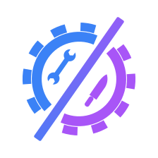

Yu Chuan[Open with one real moment from service: a dish that came back to the pass. What was wrong with it, and how did you find out? Start in the middle of the moment, not with "I used to be a chef".]
[How you actually traced it: taste it, then work backwards through the steps (the sauce, the seasoning, the timing, the station). Why guessing and remaking the whole dish wasn't an option in the middle of service.]
[One real bug from your own work, told the same way: what looked wrong, the step you checked first, and the one step that turned out to be the cause. Pick a single bug and tell it properly.]
[Two or three habits from the kitchen you still use, e.g. reproduce it before you fix it, change one thing at a time, keep your station (your code) clean so problems are easy to see.]
[Optional, but it makes the post more honest: something about debugging that the kitchen didn't prepare you for.]
[One or two sentences. What from their old job will turn out to be useful?]